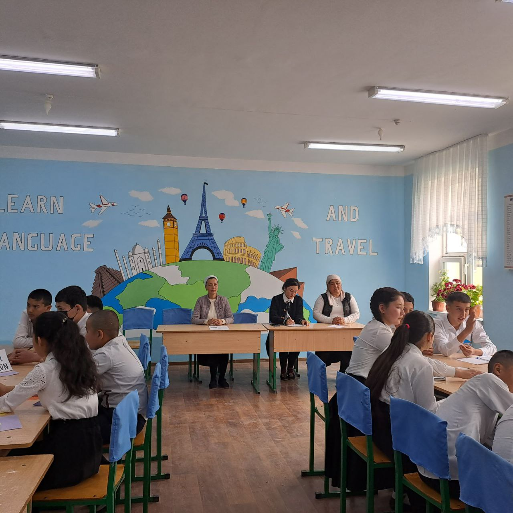
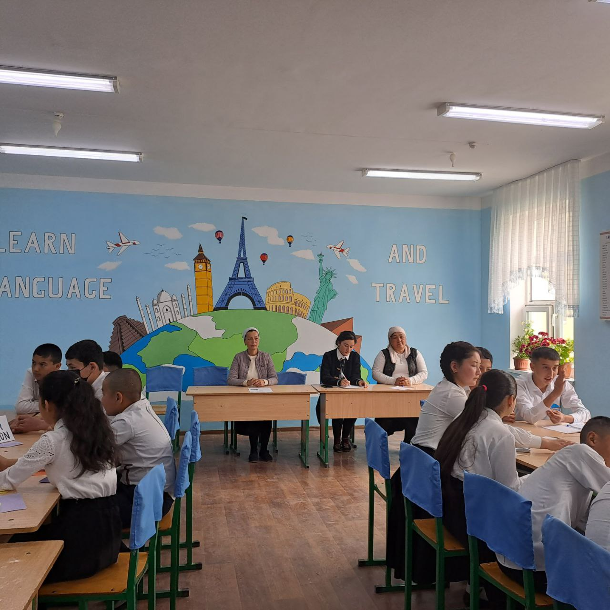

9-,,A" sinf √µquvchilari ishtirokida ,,Matn ustida ishlash "mavzusini √µrta ta'limning yangilangan mazmuni √µquv dasturiga muvofiq ishlab chiqilgan maktab fanlari b√µyicha interaktiv darslar tashkil etish maqsadida yaratilgan ta'lim uz platformasi asosida dars olib bordi . üíª Bu dasturda maktab √µquv darsliklari b√µyicha 40 mingdan ziyod dars joriy qilinib , √µqituvchi larning yangi , zamonaviy texnologiyalar asosida √µquvchilarda darsning mohiyati yetkazib berish imkoniyatlarini yaratadi . üíª √ïqituvchi¬† Ona tili darsini Tarix , Informatika , Musiqa , Adabiyot fanlar bilan integratsiya usulida olib bordi .

Она тили ва адабиёт фанидан ,,ДИРЕКТОР ТАШАББУСИ'' номли
олимпиадамизни такдирлаш жараёнларидан лавхалар. Хамма учун она
тили ва адабиёт фани бирдек макул буладиган фанлардан. Доимий
тадбирлар, бадий-адабий кечалар намоишлари билан-ми, бу фан
укувчини узига кизиктиради. Хар бир инсон хаёти даврида шеър,
эртак, хикояларни бир маротаба булса хам тўкиб, узи хохлаган
образни яратиб курган.
Она тилим сен борсан шаксиз,
Булбул куйин шеърга соламан.
Сен йуколган кунинг шубхасиз,
Мен хам тути булиб коламан.
(шеърда хатолик булса кечирасизлар, мактаб даврида ёд олган
—ç–¥–∏–º) –Æ–¢–£–ö–õ–ê–† –ú–£–ë–û–†–ê–ö –ê–ó–ò–ó –£–ö–£–í–ß–ò–õ–ê–† üëçüëçüëçüå∫üå∫üå∫üëèüëèüëè
Rasm va chizmachilik õqituvchisi Mamajanova Yulduzxonni ish faoliyatidan fotolavhalar
Namangan viloyati Uchqòrg'on tumani 3 umumiy òrta ta'lim maktabi 8 A sinf òquvchilari viloyatdagi Ziyo maskaniga sinf rahbari va fan òqituvchilari bilan birgalikda tashrif buyurishdi . Dastlab òquvchilar ròyhatdan òtishdi , sòngra ular kutubxonaning badiiy adabiyotlar bòlimiga kirishdi .Sinfimiz Informatika va Ingliz tili faniga ihtisoslashtirilganligi sababmi ularni kòproq IT bòlimi e'tiborini tortdi. Yangi zamonaviy komyuterlarda òtirib kelajaklari uchun chiroyli rejalar tuzishdi . Bugungi ekskursiya bolajonlarim hotirasida bir umr esdan chiqmaydigan va hayot yòllarini yorqinlashtiruvchi bir sabab bòlsa ajab emas. S/ R . M Xolmatova
Barakalla bolajonlarim sizlar hammasini uddalaysizlar IT bòyicha olgan sertifikatlar muborak .Biz bundan a'losiga ham loyiqmiz
Mamajonova Yulduzxonni Mahorat darsidan fotolavhalar
3 umumiy òrta ta'lim maktabi 8 A sinf .s/r M. Xolmatova Sinf soatida "Men òqigan asarlar" yuzasidan savol javob darsi òtkazildi."Yosh kitobhon" guruhi 24 ball yig'ib g'olib bòlishdi va sovrinni qòlga kiritdilar
 

Maktabda Mamajonova Yulduz tomonidan otkizilgan rasmlar tanlovidan foto lavxalar

6-"A" sinf ustozi Ma'muraxon aya bilan faol ishtirok etib, yoqtirgan kitoblarini sotib oldilar
8-,,b" sinf soatida ,,Zakovat" õyinidan fotolavhalar Abdukarimova Mõtabar
25 may ,,Sõngi qõnģiroq" tadbiridan fotolavhalar
Uchqo'rg'on tuman XTB ga qarshli 3-maktab ning 5-a sinfida Matematika fanidan ''KO'PBURCHAK PERIMETRI'' mavzusida OCHIQ DARS tashkil etildi.
Namangan viloyati Uchqõrģon tumani XTB ga qarashli 3- sonli umumiy õrta ta'lim maktabi 1-,,A" sinf õquvchilarining ,,Assalom Navrõz "tadibiridan fotolavhalar
Namangan viloyati Uchqo'rg'on tumani 3-sonli umumiy o'rta ta'lim maltabining 1-A sinfida " Bilimlar mamlakati" deb nomlangan tadbiridan fotolavhalar.

Xorijiy tillar metodbirlashma a'zolarining yiģilishidan lavhalar
Ona tili va adabiyot fani metodbirlashmasining boshqa fanlar bilan integratsiya masalasi bõyicha yuģilishidan fotolavhalar
üíªüíª Ona tili va adabiyot fani √µqituvchisi Muhammadjon Mahmudov ning 8-,,A" sinfda adabiyot fanidan ,, Alisher Navoiy hayoti va ijodi " mavzusida ochiq dars tashkil etdi . ‚úç‚úç‚úç √ïquvchilarda oƒ£zaki va yozma nutqi ustida ishlandi .She'riyatga murojaat qilib √µquvchilarning adabiyot faniga b√µlgan muhabbatlarini namoyon qildi .

‚úç‚úç‚úç Chet tilini √µrganish davr talabi , lekin undan avval √µz ona tilimizni mukammal bilmoq , uning latif s√µzlaridan unumli va √µrinli foydalana olmoq chin VATANPARVARLIKDIR üè¢ üíª Ona tili va adabiyot fani √µqituvchisi Ma'mura Begmirzayeva √µz oldiga ana shunday sharafli vazifani q√µygan ustozlardan .U √µquvchilarga √µzbek tilini faxr- u iftixor bilan √µrganish lozimligini uqtiradi .11-,,A" sinfda √µtgan bugungi,,Mantiqiylik va grammatik vositalar " mavzusida √µtgan darsi ham shu ruhda kechdi deya olamiz.
✍✍✍✍ Ona tili va adabiyot fani õqituvchisi Turģunova Sohibaning 7- ,,B" sinfda adabiyot fanidan jahon adabiyotining eng nodir ,,Chol va dengiz " asari yuzasidan õtgan darsidan fotolavhalar

3- maktab ona tili va adabiyot fani uslub birlashmasining 2023 - 2024 - õquv yilidagi avgust yiģilishidan fotolavhalar

3 - maktabda ,, Farzandimga kitob sovģa qilaman " tadbirida 7 -,, A" sinf õquvchilari faol ishtirok etishdi